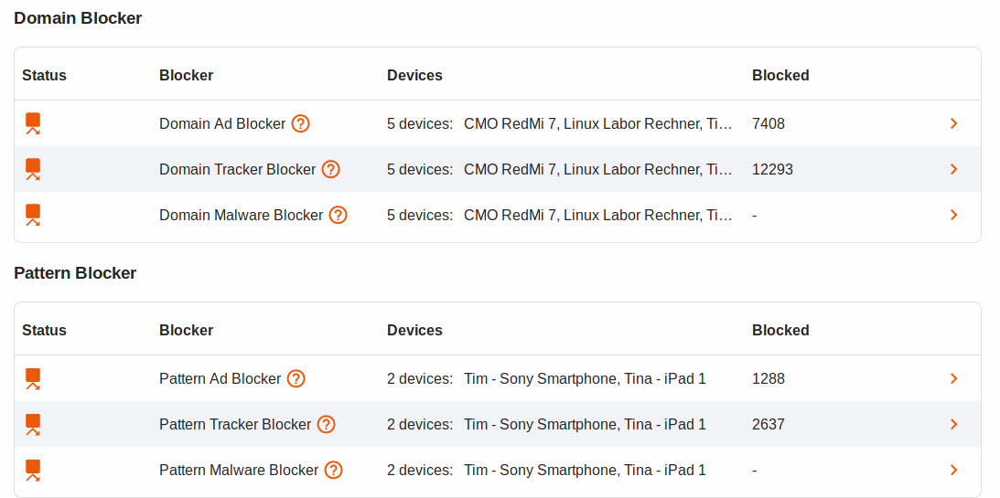
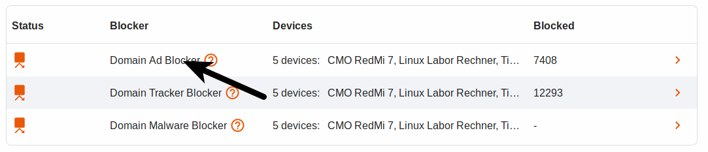
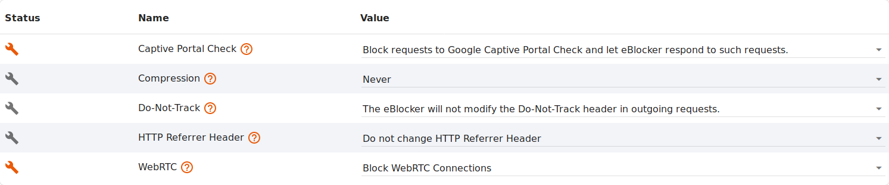

Deutsch | English
eBlocker Base ✕ / eBlocker Pro ✓ / eBlocker Family ✓
This page is divided into the following sections:
Here you get an overview of the used blocker features of the eBlocker. If you move the mouse over the individual symbols, you will receive further information.

Status
Move your mouse over the status icon and you will get a short information about the filter and the number of devices using this blocker.
If you see a yellow triangle behind the status symbol, this is an extra reference to the blocker. If you move the mouse over the yellow triangle, the note is displayed.
Blocker
Here the eBlocker distinguishes between Pattern and Domain Blocker.
Devices
Here you can see a list of all devices that currently use this blocker. If you move the mouse over the devices, a list of all devices is displayed.
Blocked Requests
Here you see a list of all blocked requests from all devices since the start of your eBlocker.
What are Domain and Pattern Blockers?
The Domain Blockers for ads and trackers block ads and trackers as soon as the domain is accessed. This blocker can also be used without activating the eBlocker SSL feature.
The Pattern Blockers for Ads and Tracker recognize the trackers and ads based on patterns. For these blockers the activation of the eBlocker SSL feature is necessary.
Upload your own lists.
You also have the opportunity to upload your own or free domain and pattern lists.
Important:
When uploading the lists, please note their function. Only if, for example, you upload domain advertising blocker lists to the Domain Advertising Blocker will the correct statistics be evaluated in the eBlocker afterwards. If you do not pay attention to this, the Tracker Blockers will be counted among the Domain Advertising Blockers.
The eBlocker allows you to upload different list formats:
"Domain List"
Domain lists are lists which contain normal domains.
Example: domain.com
"squid-acl list"
Squid-acl lists are comparable to domain list lists.
Example: domain.com
"etc.hosts list"
Etc.host lists are lists which for example have an IP address in front of the domain. These are usually the IP address of the local host (127.0.0.1), or the IP address 0.0.0.0.
Example: 127.0.0.1 domain.com
"easylist"
Easylist are lists in the format of known browser extensions such as AdBlock.
Example: @@/ad_file/*$image,domain=domain.de|domains.de
For the domain, squid-acl and ect.hosts list, the # character indicates a comment which will not be imported by the eBlocker.
Example # Domains follow
Upload own / free lists.
To upload a list, click on one of the three items (Advertising, Tracker, Malware & Phishing) in the overview of the domain or pattern blocker.

On the following page, please click the ADD button.
Now you can assign a name to the list, select the format of the list (see above), enter the URL (web address) of the list and activate the switch for "daily update" if necessary.
After a click on the SAVE button, the eBlocker will first download this list and then import it. Importing a list may take a few seconds, depending on the length of the list.
An example of collections of lists on the Internet:
At https://firebog.net/ you will find mainly domain and ect.hosts lists. Always pay attention to the beginning of the lists. If you find an IP address at the beginning (127.0.0.1 or 0.0.0.0), it is an ect.hosts list.
On https://filterlists.com/ you can find a lot of filter lists. Here you can for example search for "AdBlock" lists, which you can import into the eBlocker Pattern Blocker. Make sure that you select the "easylist" format for such lists.
The advanced settings require the activation of the HTTPS function.

Captive Portal Check
Google Captive Portal Check is used by Google products such as Android, Chrome and Chromebooks to test whether an Internet connection exists. Your IP address is sent to the Google Captive Portal. eBlocker blocks the structure of the Google Captive Portal, otherwise Google will collect your IP address. Activate this option with one click if Android devices are often disconnected from your WLAN.
Compression
Web servers often compress the delivered web pages in order to keep the amount of data transferred on the Internet as low as possible. The eBlocker must then decompress the data to analyze the page and perform its protection features. In your local network, re-compressing on the last track to the device would not result in a speed advantage. On the contrary: The page layout is usually even faster if no new compression and decompression is used for this last track.
Only if your device is connected via eBlocker Mobile while on the go it should be compressed to the device.
Therefore the compression feature of the eBlocker offers you three settings.
No Compression
The data between eBlocker and device is not compressed again.
Compression for eBlocker Mobile Devices (recommended)
As above. Only if your device connects via eBlocker Mobile while on the go, the data between eBlocker and device will be compressed.
Always compress
Here the data is always compressed during transport from the eBlocker to the device.
Do Not Track
Do-Not-Track (DNT) is an HTTP header field which signals to a website that the visitor does not want a user profile to be created from the website. Unfortunately, this wish of the user is not binding and is therefore ignored by many websites.
For most browsers, this feature can be found in the privacy or security settings.
The eBlocker makes it easier for you and automatically sets the Do-Not-Track field in all requests after activation of the function.
HTTP Referrer Header
HTTP referrer headers are automatically created when you surf the Internet. The referrer displays the website you visited before you reached the current website.
By using the referrer headers, websites can partially track your surfing habits. Some websites also use the referrer headers for internal purposes. Blocking the referrer headers can therefore result in some pages no longer being displayed correctly. Decide with one click whether referrer headers should be allowed.
WebRTC
WebRTC is a browser technology that enables real-time communication between two parties. It is used, for example, for Internet telephony and chat.
Unfortunately, WebRTC reveals your real IP address (and even your local LAN IP) to establish the connections. Even when using Tor (IP anonymization), you can be identified by your real IP address if WebRTC is not blocked. Decide with one click whether WebRTC connections should be allowed.